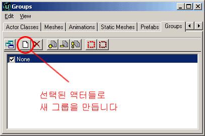
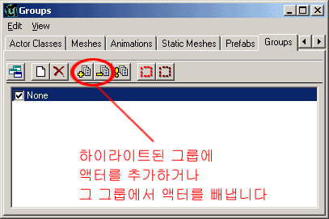
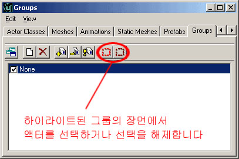

UDN
Search public documentation:
GroupsBrowserKR
English Translation
日本語訳
Interested in the Unreal Engine?
Visit the Unreal Technology site.
Looking for jobs and company info?
Check out the Epic games site.
Questions about support via UDN?
Contact the UDN Staff
日本語訳
Interested in the Unreal Engine?
Visit the Unreal Technology site.
Looking for jobs and company info?
Check out the Epic games site.
Questions about support via UDN?
Contact the UDN Staff
Groups Browser (그룹 브라우저)
문서 요약: 레벨의 관리를 위한 Groups Browser 사용에 대한 안내와 참조. 문서 변경 내역: 최종 업데이트 Jason Lentz (DemiurgeStudios?) - 작성 목적에 대해. 원저자 Jason Lentz (DemiurgeStudios?).서론
그룹 브라우저는 흔히 간과하기 쉽지만 매우 유용한 도구입니다. 이 문서에서는 이 기능을 활용하여 레벨을 관리하는 방법을 시연해 보입니다.새 그룹의 작성
원래 레벨에 추가되는 모든 것들은 "None" 그룹에 배치됩니다. 그룹을 새로 만들려면 그 그룹에 포함시키고자 하는 액터를 하나 또는 모두 선택해야 합니다. 그 다음 그룹 브라우저의 맨 위에 있는 "New Group" 버튼을 클릭합니다.
윈도우가 나타나면 새 그룹에 이름을 붙여 줍니다. 이제 이 그룹에 속해있는 액터들은 방금 새로 만든 그룹과 원래의 그룹인 "None, 두 개의 그룹에 속하게 됩니다."액터를 그룹에 추가하기 및 그룹에서 빼내기
그룹에 액터들을 추가하는 것은 쉽습니다. 그 그룹에 포함시키고 싶은 액터들을 선택한 다음 그룹 브라우저에서 그룹을 선택하고 "Add" 버튼을 누르기만 하면 됩니다. 똑같은 과정을 거쳐서 "Remove" 버튼을 누르면 액터들을 제거할 수 있습니다.
또 Ctrl 키를 누르고 클릭하거나 Shift 키를 누르고 클릭하면 여러 개의 그룹을 한 번에 선택할 수 있습니다. 하나의 액터가 원하는만큼 많은 그룹에 속할 수 있습니다. 이것은 모두 다 오버랩하는 그룹에 들어있는 여러 세트의 액터를 가지고 있는 경우 도움이 될 것입니다. 예를 들어, 모든 것을 한 지역에 배정하고 한 그룹이 레벨 내의 모든 문들로 구성되도록 함으로써 그룹을 정리할 수 있습니다. 액터를 복제할 경우, 새 액터는 그 부모 액터가 있는 그룹에 남게 된다는 점을 유념하십시오. 이 때문에 액터를 새로 만든 즉시 그룹에 배정하기 시작하는 것이 좋습니다. 이렇게 하면 그룹 브라우저의 설정을 다루기가 조금 쉬워집니다.그룹의 체계화 및 사용
그룹은 두 가지 강력한 용도(액터 숨기기와 선택하기)를 가지고 있습니다. 그러나 그룹들이 잘 체계화 되어있어야 이 강력한 힘이 쓸모가 있습니다. 그룹을 사용하면, 어지러운 장면을 현재 작업하고 있는 도형과 액터들만을 남기고 빠르게 정리할 수 있습니다. 예를 들어, 여러개의 레벨을 가지고 있지만 많은 모듈식 부분으로 된 빌딩 작업을 하고 있다고 가정합니다. 각 층을 하나의 그룹에 배정함으로써 작업중이 아닌 각 층을 숨길 수 있으며, 이것은 탑 뷰를 처리하기 쉽게 합니다. 그룹 사용의 또 하나 유용한 기능은, 이것을 특정 그룹의 액터를 선택할 때 사용할 수 있다는 것입니다. 하나의 나무 StaticMesh만으로 된 나무 들판이 있는데, 최종적으로는 3가지 타입의 나무를 가질 계획이라고 가정합니다. 그 동안에, 하나의 나무를 사용하여 이것을 레벨 전체에 전파하되, 일정 세트의 나무들을 각각 다른 그룹에 배정할 수 있습니다. 그런 다음 나중에 다시 되돌아가 이름을 클릭하여 그 그룹을 선택하고, "Select Actors"(아래 그림 참고) 버튼을 클릭한 다음 이 액터들의 StaticMesh 속성을 모두 한 번에 변경할 수 있습니다.
커다란 레벨을 작성할 때는 그룹을 더 폭넓게 사용할수록 작업이 더 쉬워집니다. 그리고, 항상 처음부터 그룹을 사용하기 시작하는 것이 레벨 작성 작업이 이미 한창 진행된 다음 그룹을 짜넣는 것보다 쉽다는 것을 기억하십시오.